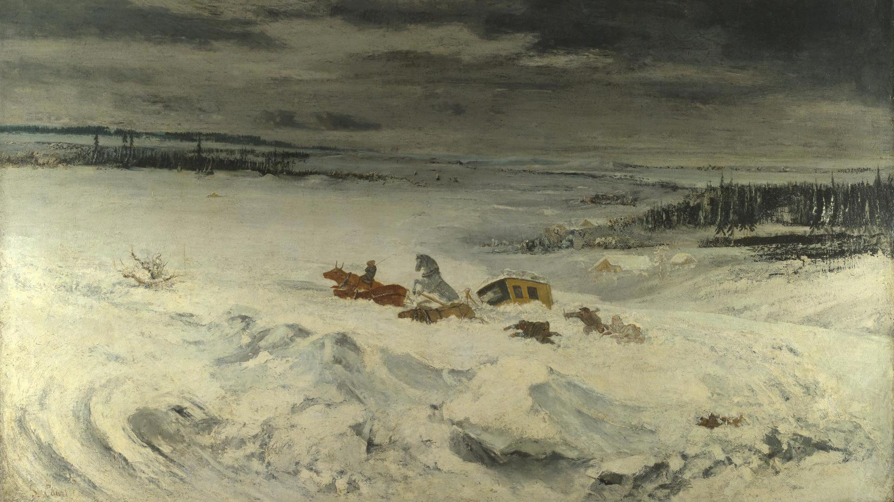

I keep a list of books I have read and found interesting. I'm always happy to chat about any of these titles, share recommendations, or find something to read together.
2025
- William Faulkner: The Sound and the Fury
- Shakespeare: King John; Edward III
- Virginia Woolf: Mrs Dalloway
- Fyodor Dostoevsky: Demons (tr. Robert A. Maguire)
- 托尔斯泰《复活》（石枕川译） (Leo Tolstoy: Resurrection)
- Theodor Storm: Immensee
- Stefan Zweig: Brief einer Unbekannten
- Clarice Lispector: The Passion According to G.H. (tr. Idra Novey)
- 白先勇《孽子》
- 张爱玲《半生缘》
- 川端康成《雪国》、《伊豆的舞女》、《舞姬》、《山音》（陈德文译） (Yasunari Kawabata: Snow Country; The Dancing Girl of Izu; Maihime; The Sound of the Mountain)
- 村上春树《世界尽头与冷酷仙境》、《1973年的弹子球》（林少华译） (Haruki Murakami: Hard-Boiled Wonderland and the End of the World; Pinball, 1973)
2026
- George Eliot: Daniel Deronda
- E. M. Forster: Maurice
- D. H. Lawrence: The Plumed Serpent
- Bernhard Schlink: Der Vorleser
- Tezer Özlü: Cold Nights of Childhood; Journey to the Edge of Life (tr. Maureen Freely)
- 韩少功《日夜书》
- 李洱《花腔》
- 张爱玲《金锁记》、《倾城之恋》、《第一炉香》、《第二炉香》、《茉莉香片》、《心经》、《封锁》
- 川端康成《湖》、《睡美人》（陈德文译） (Yasunari Kawabata: The Lake; The House of the Sleeping Beauties)